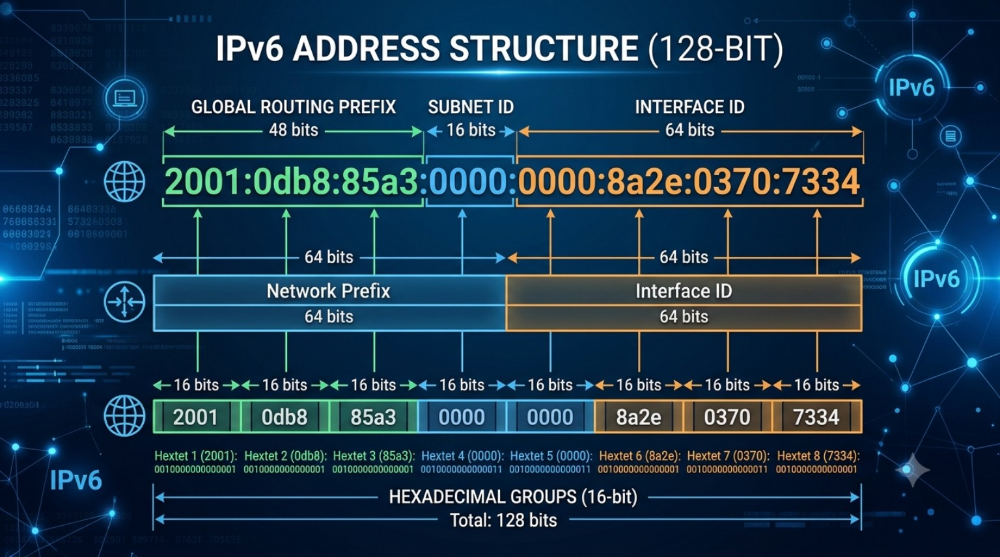

Presentación del Proyecto
El Protocolo de Internet versión 6 representa la evolución crítica de la arquitectura fundamental de la red global. Este documento abarca la estructura, el direccionamiento y la implementación práctica requerida para responder a la creciente demanda de conectividad mundial.
Introducción y Contexto
El Protocolo de Internet Versión 6 (IPv6) es el estándar de capa de red diseñado por el IETF (Internet Engineering Task Force) para reemplazar a IPv4, cuyo esquema original de 32 bits agotó sus direcciones utilizables debido a la expansión masiva de dispositivos móviles y dispositivos IoT.
¿Por qué es importante? Sin IPv6, el crecimiento de la red global se detendría. Este protocolo no solo amplía el espacio de direcciones a un nivel prácticamente inagotable, sino que resuelve falencias estructurales en el procesamiento de paquetes, la seguridad en la transmisión y la autoconfiguración de nodos sin depender de intervención manual.
Desarrollo y Conceptos Clave
IPv6 redefine la forma en que los datos se encapsulan y transmiten a través de los enrutadores de la red central. A diferencia de su predecesor, elimina la fragmentación en enrutadores intermedios, delegando esta tarea a los hosts emisores mediante el descubrimiento del MTU de la ruta (PMTUD).
Componentes del Protocolo
- Cabecera fija de 40 bytes: Estructura optimizada que acelera el procesamiento del hardware en los enrutadores.
- Campos de extensión: Permiten añadir opciones de seguridad o enrutamiento solo cuando se requieren, sin sobrecargar la cabecera base.
- Protocolo ICMPv6: Integra funciones clave como la resolución de direcciones de capa de enlace (NDP) y el descubrimiento de enrutadores.
Comparativa: IPv4 vs IPv6
| Característica | IPv4 | IPv6 |
|---|---|---|
| Tamaño de dirección | 32 bits (4.3 mil millones) | 128 bits (3.4 × 10³⁸) |
| Formato | Decimal punteado (ej. 192.168.1.1) | Hexadecimal separado por `:` (ej. 2001:db8::1) |
| Configuración de red | Manual o mediante DHCPv4 | Autoconfiguración SLAAC o DHCPv6 |
| Seguridad (IPsec) | Opcional / Añadido posteriormente | Soporte integrado en el protocolo |
| Traducción NAT | Requerido para ahorrar direcciones | Innecesario (Conexión punto a punto directa) |
Ejemplos y Casos Prácticos
En entornos reales de proveedores de servicios de Internet (ISP) y redes corporativas, el esquema de direccionamiento se aplica dividiendo los 128 bits en bloques jerárquicos: Prefijo de Red Global, ID de Subred e ID de Interfaz.

Aplicación de Reglas de Simplificación
Para simplificar las direcciones de 128 bits escritas en formato hexadecimal, se aplican dos reglas estándar:
- Omitir ceros a la izquierda: En cualquier grupo individual de 16 bits, los ceros iniciales pueden descartarse. Por ejemplo,
0db8se escribedb8. - Compresión mediante doble dos puntos (::): Un bloque consecutivo de grupos compuestos exclusivamente por ceros se reemplaza por
::. Esta regla solo se puede usar una vez por dirección.
Dirección Completa (128 bits):
2001:0db8:85a3:0000:0000:8a2e:0370:7334
Dirección Simplificada Aplicando Reglas:
2001:db8:85a3::8a2e:370:7334
Conclusiones
La transición hacia IPv6 no es simplemente una actualización opcional, sino una necesidad imperativa para garantizar la sostenibilidad operativa de la red mundial. Las arquitecturas modernas requieren soportar la demanda masiva de servicios en la nube, redes 5G y sistemas automatizados que exigen direccionamiento directo.
La implementación de IPv6 elimina la complejidad y los cuellos de botella introducidos por las tecnologías NAT en IPv4, restaurando el principio de extremo a extremo en las comunicaciones, reduciendo la latencia y elevando los estándares de seguridad integrada en la industria actual.